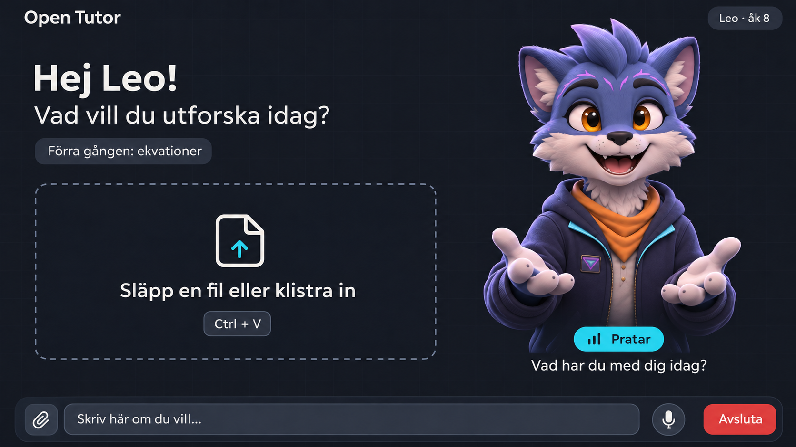
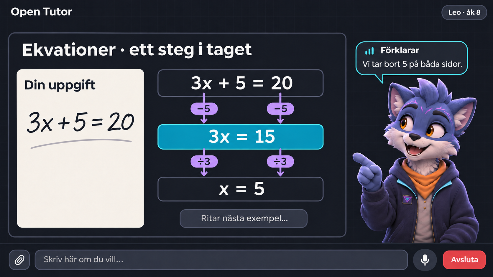
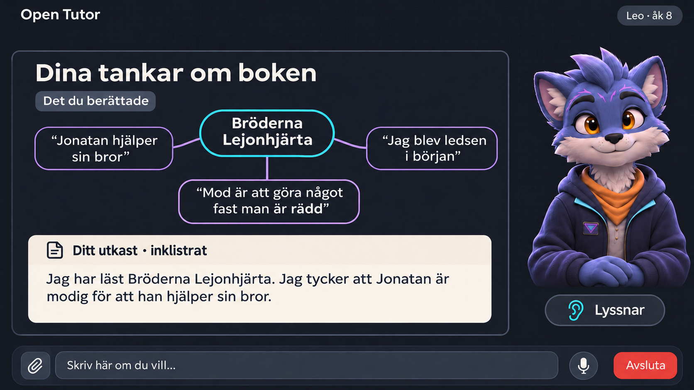

Arrive
Choose a local learner. The tutor welcomes them.
Open Tutor / The recommendation
Open Tutor · product foundation and technical proposal · 3 November 2026
A welcoming tutor. A live conversation. Something useful to show.
Build a small app around LiveKit and reuse selected work we already have.

Open Tutor / The child's experience
Windows PC or school Chromebook. No installation or learner account.
Choose a local learner. The tutor welcomes them.
Talk, drop a file, or paste text or a screenshot.
Explain, ask, draw, read, watch, and think quietly.
The child does the work. Short learning notes carry forward.
Open Tutor / The foundation is preserved
The selected second-pass images and style guide are now part of the review package.

Large on arrival
Welcoming and recognisable.
Smaller during work
The board becomes the main space.
Quiet when useful
No false speaking indicators.
Stable controls
Text, microphone, and end call stay available.
Open Tutor / Build or adapt?
Source inspection points to selective reuse rather than adopting another tutor wholesale.
Python voice integrations, session state, visual-stage patterns, and timing instrumentation.
MIT. Leave its T3 and coding workflows behind.
Homework context, LiveKit-to-board actions, and explicit turn state.
MIT. Its editable canvas is a different product choice.
Multimodal teaching and memory ideas.
AGPL. A larger retrieval stack than we need initially.
Inspected source and licences, not live product sessions. Revisions are recorded in technical evidence.
Open Tutor / How it fits together
The browser shows the lesson. LiveKit carries the call. Our worker coordinates the tutor.
Avatar · homework · board
Text and microphone controls
Local learner notes
Live audio
Connection and call state
Board messages and captions
Teaching instructions
Speech and LLM connections
Tools for visuals and resources
The tutor service calls providers. Provider keys stay there.
Open Tutor / The proposed stack
Choose a small first implementation. Pin exact versions when building it.
Open Tutor / The visual teaching approach
The tutor owns the board initially. Children write their assignments where school expects.

Fast, precise visuals
Equations, diagrams, steps and mind maps.
Richer content when useful
Generated HTML, animations and images.
Speak in step with the board
Know when a visual is ready before referring to it.
Generated panels stay separate from fixed controls and learner storage. tldraw production licensing is another reason to defer an editor dependency.
Open Tutor / One assumption to resolve
The product design survives a provider change. The subscription assumption needs checking.
Its current documentation describes coding-agent traffic. Tutoring eligibility is unconfirmed.
The Muse Spark Contributor route also lists training use and regional conditions.
Keep the intended Spark candidate if a supported tutoring route is confirmed.
Use an ordinary metered API behind the same provider interface.
Open Tutor / Where the first demo lives
A proposed deployment, not a service that is live today.
Proposed URL: tutor.labtopia.dev
Use CPU hosting already available. Confirm machine availability and DNS during deployment.
Browser audio connects through LiveKit Cloud directly.
Inference runs with providers; no GPU installation on the child's PC.
Open Tutor / Path to the child's Windows PC
This package completes the foundation and technical proposal. Implementation starts after review.
Swedish voice, homework page, interruption, quiet work and a board update together.
NEXTApproved character, profiles, uploads, teaching board, links and learning notes.
Persistent hosting and checks on the actual Windows PC and Chromebook.
Observe a weekday session and fix the friction the child actually encounters.
Milestones describe results, not promised dates. No integration experiment has been run yet.
Open Tutor / What the evidence does and does not say
We have inspected the ingredients. We have not proved the recipe.
Open Tutor / For your review
The product ambition stays intact. The implementation starts small.
Preserve the experience you chose instead of inheriting another tutor's whole product.
Keep providers replaceable and choose the Swedish voice through actual listening.
Reach a normal browser URL; consider wider access after the family experience works.